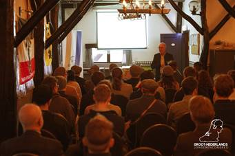
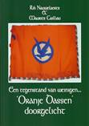
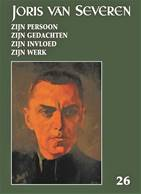
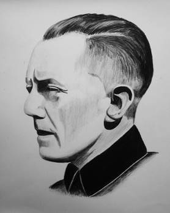
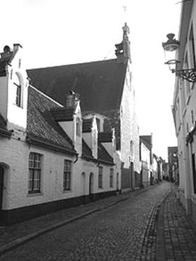

> nieuwsbrief > 2022 - nr 2
Inhoud
Kaftillustratie: foto lezing Luc Pauwels over z’n nieuwe Joris van
Severen-biografie ergens in Nederland

Herinnering ledenbijdrage voor
2022
Wie zijn ledenbijdrage
van minimum 29 € nog niet vereffende kan dit alsnog doen en
dit het liefst voor aanvang mei. Dit laat ons immers toe de
oplage van het 26e jaarboek nauwkeuriger te bepalen.
Vereffening graag via
onze rekening IBAN: BE71 0001 7058 1469 – BIC: BPOTBEB1 t.n.v.
Studiecentrum Joris van Severen, Paddevijverstraat 2, 8900
Ieper.
Wie méér dan het
minimumbedrag van 29 € overschrijft boeken we traditiegetrouw
als erelid.
Bijgave
bij het Jaarboek 2022
Bij het Joris
van Severen Jaarboek 2022 mogen onze ereleden (zij die
spontaan hun jaarbijdrage verhoogden tot 35 € of meer) een
toegift verwachten, nl. het boek Oranje Dassen doorgelicht
(144 p.), zijnde de geschiedenis van het Algemeen Diets
Jeugdverbond. Een jeugdbeweging die Joris van Severen hoog in
het vaandel droeg en door velen als ’n neo-Dinaso-organisatie
werd geïnterpreteerd.
Oude Jaarboeken Joris van
Severen
Mede met het oog
op de nakende fusie tussen het Studiecentrum
Joris van Severen en de Stichting Joris van Severen
tot het Joris van Severen
Instituut (zie ook verderop in deze
Nieuwsbrief) werd besloten het aantal archiefexemplaren van de
al verschenen jaarboeken af te bouwen.
Van alle
jaarboeken (met uitzondering van het Oorlogsdagboek en
de Fotobiografie) zijn nog exemplaren voorhanden.
Daarmee bieden we onze leden een enige gelegenheid op het
aanvullen van de hiaten in hun jaarboekenreeks. De gunstprijs
per jaarboek bedraagt 5 €, te verhogen met de verzendkosten,
zijnde 5,80 € per 2 exemplaren.
Interesse? Deel
ons dan de je ontbrekende jaargangen mee. Voor zover voorradig
leggen we die dan voor jou opzij op basis van “Wie eerst komt,
eerst maalt”
Oproep
Hans
Nelis, die in het Joris van
Severen Jaarboek 26 (2022) een
bijdrage levert over de Dietse
Solidaristische Beweging (DSB), zoekt voor een
vervolgartikel over de Solidaristische
Beweging SB (1975-1979), het nummer 51 van Speerpunt
(blad van de Solidaristische Militantenorde SMO) en het
SMO vormingsdocument "Wat is en wat wil de SLGV '(School voor
Lichamelijke en Geestelijke Vorming, opgericht door Maarten
van Nierop). De SLGV groepeerde o.a. militanten van de SB,
VMO, Jongerenfront en Voorpost maar kende een heel kortstondig
bestaan.
hans.nelis@ugent.be Telefoon 047 7754524.
Met deze aflevering zijn we aan het 26e Jaarboek Joris van
Severen toe. We brengen andermaal een ruime
verscheidenheid aan bijdragen die op een of andere wijze
inzoomen op de ondertitel van deze reeks: Joris van
Severen, zijn persoon, zijn ideeën, zijn invloed en zijn
werk.
Vooreerst komt Luc Pauwels
aan het woord die, na zijn recente grote biografie van Joris
van Severen, als het ware de lijn doortrekt met z’n essay Joris van Severen, een begin…
Daarop aansluitend brengt Romain
Vanlandschoot de resterende hoofdstukken van zijn
diepgravend essay De laatste weg alleen, Joris van
Severen 8 mei 1927 – 29 mei 1929, In
het afsluitende luik van dit essay - waarvan het eerste deel
werd opgenomen in het Jaarboek Joris van Severen 25
(2021) - komen respectievelijk aan bod: ‘’Een vernietigende,
kwetsende en arrogante rede’, ‘Wil Joris van Severen wel een
Directorium?’, ‘Roosendaal helemaal niet rooskleurig’, ‘De
meerderheid van het KVNV is met mij’ en ‘De schaduw van August
Borms’.
In Gerard van der Horst
en het Verdinaso in Nederland brengt Ruud Bruijns diens rol en de
verdiensten in herinnering bij het ontstaan en de uitbouw van
de Noord-Nederlandse tak van Van Severens beweging. “Ik weet zeer goed dat
gij de eerste zijt geweest…”, loofde Van Severen hem.
Hij was niet slechts de eerste, doch ook de laatste
getrouwe, zo blijkt.
Toen de Nederlandse regering in 1934 het
ambtenarenverbod inzake lidmaatschap van Musserts NSB
afkondigde publiceerden 19 hervormde predikanten een pamflet
tegen deze maatregel. Hun oproep werd naderhand door nog eens
100 predikanten onderschreven. Hun grote bezwaar werd hen
ingegeven door hun antibolsjewisme. Onder hen waren er een
vijftal abonnees van Hier Dinaso!, het wekelijkse
tijdschrift van het Verdinaso. Geen van die vijf was NSB’er en
evenmin hebben ze tijdens de Tweede Wereldoorlog
gecollaboreerd met de Duitse bezetter, wel integendeel:
sommigen onder hen stonden in het daadwerkelijke verzet.
Daarover vernemen we meer in de bijdrage van Henk Tijssen over De ‘Hier Dinaso!’-lezers onder de
hervormde predikanten in de noordelijke Nederlanden.
Niet onterechte wordt wel eens beweerd dat in de
jaarboekenreeks over Joris van Severen bij voorkeur aandacht
besteedt wordt aan Louis Gueuning en Emiel Thiers, i.c. dan
wat betreft hun rol bij de teloorgang van het Verdinaso
aanvang het jaar 1941. In de bijdrage van de hand van Maurits Cailliau over Het andere
geluid: over de rol van Jef François in 1940-1941
wordt gefocust op het aandeel van Jef
François en Pol le Roy in deze cruciale maanden.
Na het einde van de Tweede Wereldoorlog zijn tal van
pogingen ondernomen om de ideeën die het Verdinaso nastreefde
– de eenheid van de Nederlanden en de structurering van het
maatschappelijk bestel op basis van het solidarisme – opnieuw
te actualiseren. Over één van deze pogingen brengt prof. em. Hans Nelis, met z’n essay Het
gedachtegoed van een neo-Dinaso beweging: De Dietse
Solidaristische Beweging (DSB), als destijds
geëngageerd militant van de DSB, verslag uit.
Afsluitend komt in deze editie ook Joris van Severen zelf aan het woord
middels zijn Dagboeknotities
over de periode aanvang januari tot einde april 1921. Daarin
komt, naast zijn zorgen om ‘Maine’, ook z’n weerzin tegen alle
vormen van geweld manifest op de voorgrond. Daarnaast ook een
handgeschreven notitie van zijn hand.
Luc Delafortrie’s gedicht Denkend aan het
Verdinaso sluit het jaarboek af.
Ook voor deze editie van ons jaarboek konden we
andermaal rekenen op de gewaardeerde medewerking van Frederic
van Waeijenberge als onmisbare tekstcorrector.
Dit 26e Jaarboek Joris van Severen is de
laatste editie uitgegeven door het Studiecentrum Joris van
Severen. Doch niet het laatste in de reeks. Als reeds in de Nieuwsbrief
Joris van Severen aangekondigd fuseren het
‘Studiecentrum Joris van Severen’ en de ‘Stichting Joris van
Severen’ in de loop van dit jaar onder de naam Joris van
Severen Instituut, dat vanaf 2023 de nieuwe uitgever van
het Jaarboek Joris van Severen wordt.
Op weg naar een fusie: het Joris van Severen Instituut
Naar
aanleiding van de Algemene Vergadering 2021 van het Studiecentrum
Joris van Severen – vzw werd gepleit voor een samengaan
met de Stichting Joris van Severen vzw, die al sinds
jaren instaat voor het organiseren van de
herdenkingsplechtigheden te Brugge en te Abbeville en het
onderhoud van het grafmonument aldaar.
Tijdens
de voorbije maanden werden daartoe meerdere gesprekken gevoerd
teneinde tot een fusieakkoord tussen beide vzw’s te komen dat
in de loop van 2022 in werking zal treden onder de naam Joris
van Severen Instituut - vzw.
Binnen
het Joris van Severen Instituut zullen een
drietal werkgroepen gevormd worden, waaronder ook de
‘Werkgroep publicaties’, die vnl. zal instaan voor de redactie
en voortzetting van de jaarboekenreeks en de Nieuwsbrieven.
Voor
het lidmaatschap van beide vzw’s zal dit geen gevolgen hebben:
met het ingaan van de fusie wordt het lidmaatschap automatisch
omgezet tot het lidmaatschap van het Joris van Severen
Instituut. Het Studiecentrum Joris van Severen
verzorgt nog de uitgave en verspreiding van het 26e Jaarboek
Joris van Severen 2022 en de Nieuwsbrieven Joris van
Severen, nummers 2 en 3/2022. Het nummer 4/2022
wordt een uitgave van het Joris van Severen Instituut,
gevestigd in Izegem.
Nadere
praktische gegevens met etrekking hiermee volgen in de
volgende Nieuwsbrief Joris van Severen.
zaterdag
21 mei 2022 - jaarmis te brugge & ZONDAG 22 MEI
2022 GROET aAN HET GRAF TE
ABBEVILLE

Een initiatief van de Stichting Joris van
Severen vzw
Programma HERDENKINGEN
Jaarmis in de Blindekenskapel
kreupelenstraat te brugge
Zaterdag
16 mei: 10 uur: Plechtige
Gregoriaans gezongen H. Mis met homilie, geconcelebreerd door
de E.H. Jan Tilleman en opgeluisterd door het parochiekoor
Kristus Koning, ter nagedachtenis van Joris van Severen, zijn
lotgenoten en al onze overledenen in de Blindekenskapel,
Kreupelenstraat te Brugge.
 De
Blindekenskapel te Brugge
De
kapel herinnert aan de Slag op de Pevelenberg anno 1304 in de
Franse Nederlanden, waaraan de Brugse stedelijke milities
deelnamen.
De
kapel is gelegen in de Kreupelenstraat, een zijstraat van de
Smedenstraat.
In
de Kreupelenstraat is er geen parkeergelegenheid. Parkeren kan
o.m. in de ondergrondse parking op ’t Zand, die zich op
wandelafstand van de kapel bevindt.
Herdenking aan het Bourgoensche
Cruyce
Zaterdag
21 mei: 11.30 uur: aansluitend
op de herdenkings-mis volgt aan de toegangspoort tot het
Bourgoensche Cruyce, het voormalige woonhuis van Joris van
Severen in de Wollestraat te Brugge, aan de gedenkplaat die
memoreert aan de namen van de vier Brugse slachtoffers van het
Bloedbad van Abbeville, een korte
herdenkingsplechtigheid, jaarlijks ingericht het
Brugse Abbeville Comité,
met aansluitend receptie..
Groet aan het graf te Abbeville
Zondag 22
mei: afspraak om 11.30 uur aan de
toegang tot het kerkhof te Abbeville. Aansluitend gezamenlijk
bezoek aan het graf van Joris van Severen en
Steun en info
Wenst
u op de hoogte gehouden te worden van de activiteiten van de Stichting
Joris van Severen vzw, dan kunt u zich wenden
tot de voorzitter
Steun
in het bijzonder voor
de bloemstukken op het graf te Abbeville en voor
de door de Stichting Joris van Severen ontplooide
initiatieven kunt U overmaken op het rekeningnummer van de Stichting Joris van Severen: IBAN: BE29
4650 2267 2164 BIC: KREDBEBB, Izegem.
Voor
het bezoek aan het graf te Abbeville op zondag 21 mei maken we
gebruik van de ‘samen rijden’-formule op kostendelende basis.
Dit initiatief wordt gecoördineerd door Paul Seynaeve – tel.
0495-290318 - tot uiterlijk 15 mei. Na deze datum kunnen in
deze geen bindende afspraken meer gemaakt worden.
’Quelques points d'histoire "oubliés"
Le kiosque
d'Abbeville
Cousins Francis et Prosper nous racontent ...
Il est de tradition, sinon de règle, lorsque se font
entendre des bruits de bottes aux frontières, de dresser la
liste de tous les suspects de connivence avec l'ennemi
potentiel. Cela s'appelle le syndrome de la cinquième colonne.
Il en est ainsi dans tous les pays.
En 1940, il en fut ainsi en Belgique. La liste
comprenait les Allemands et Autrichiens résidents en Belgique
ou y ayant trouvé refuge en raison de leurs opinions
antinazies ou, comme de nombreux juifs, des répressions
hitlériennes; des Italiens antifascistes, des anciens des
Brigades Internationales; des communistes; des nationalistes
flamands; des rexistes; également nombre de personnes dont la
tête ne plaisait pas au voisin.
Le 10 mai 1940 et les jours qui suivirent
l'agression allemande, policiers et gendarmes, plutôt que de
se porter aux frontières, frappèrent aux portes des suspects
et les jetèrent en prison. Les juristes, qui disent joliment
les choses, désignent cela comme une décision administrative
d'internement à titre préventif. En tout quelques milliers de
personnes bénéficièrent de ces mesures préventives. L'effectif
se gonfla grâce à la liste des suspects que les garants de
l'indépendance du royaume c'est-à-dire l'armée française
emmenait dans ses gamelles. Les Allemands avaient également
une liste dans leur gamelle mais pas forcément la même et
c'est une autre histoire.
Les prisons belges étant pleines à craquer d'une
part et l'avance des troupes allemandes étant plus rapide que
prévue d'autre part, il fut décidé de transférer "les
suspects" vers des camps d'internement français. Nous ne
raconterons l'histoire d'un seul convoi: celui de Bruges à
Abbeville.
La bavure (?)
Le 15 mai, l'administration pénitentiaire de la
prison de Bruges, submergée par l'incarcération de "suspects"
décide d'en transférer une partie vers la France. 79 personnes
sont embarquées dans un convoi de trois autocars: 20 ou 21
Belges, 18 Juifs de nationalité inconnue, 14 Allemands, 6
Néerlandais, 3 Luxembourgeois, 9 Italiens, 2 Suisses, 1
Français Alsacien que l'on pourrait à première vue croire
victimes d'un accent allemand, 1 Espagnol, 1 Danois, 1
Canadien Robert Bell, entraîneur de l'équipe nationale
allemande de hockey sur glace, incarcéré en mars 1940 pour
manque de papiers en règle et suspecté d'être un espion, 1
Autrichien, 1 Tchèque. Tous, bien entendu, ne sont pas
innocents. Le groupe compte notamment Léon Degrelle en
personne, le chef de Rex.
Les trois autocars et les 78 détenus partis de
Bruges avaient gagné Dunkerque via Ostende à la frontière
franco-belge. Là, Léon Degrelle qui est né sous une bonne
étoile est reconnu, tiré du car et proprement passé à tabac
par des militaires français. Degrelle s'en tire avec quel-ques
"bleus" somme toute bien mérités. Le convoi repartira sans
lui, et sous les huées et les jets de pierre atteindra la
prison de Béthune où, après un interrogatoire d'identité
sommaire pour l'établissement d'une liste, les 77 suspects
seront remis, dans des conditions restées peu claires, à la
Sûreté française. Ils resteront détenus à Béthune jusqu'au 19
mai, puis de nouveau évacués devant l'avance allemande. Au
moment du départ, on joindra au lot un jeune Belge vivant en
France et ayant refusé d'être mobilisé dans l'armée de la
IIIème République.
Sous la protection de la Sûreté française, le convoi
atteindra Abbeville dans la nuit du 19 au 20 mai vers minuit
et les suspects seront, faute de mieux, enfermés dans la cave
du kiosque de musique de la Porte du Bois. Pour Abbeville, la
journée du 20 mai est un jour sombre. Les Allemands sont aux
portes de la ville. Pour les dernières unités présentes dans
la ville en flammes, le "décrochage" s'impose mais que faire
des prisonniers?
Le capitaine Marcel Dingeon, de l'état-major de la
place, un architecte mobilisé choisit une solution expéditive:
les fusiller tous! Qui donc a eu la malencontreuse idée de
confier 79 "parachutistes" allemands à un capitaine ivrogne
(c'est ce que dira la commission d'enquête). Dingeon donne
ordre verbal au sergent-chef François Molet et sa section de
la 5ième compagnie du 28ième Régiment Régional, des
territoriaux rappelés d'âge déjà mûr. Quelques soldats d'une
unité du Train se joindront à eux. La tuerie commence. Par
groupe de 4 ou de 2, les malheureux civils sont extraits de
leur cachot et abattus froidement. Le lieutenant René Caron,
supérieur direct de Molet, instituteur dans le civil, qui
passait justement par-là, participe à la fête. (encore un
ivrogne dira l'enquête).
Serait-ce pour commémorer l'exploit du lieutenant
René Caron qu'une rue d'Abbeville porte toujours son nom?
Le sergent chef Molet est mal à l'aise. Il
retourne voir le chef Dingeon.
"Fusillez les tous" répond Dingeon. Pour en finir au plus
vite, un soldat français lance une grenade dans la cave du
kiosque. Elle n'explose pas. Elle était de mauvaise qualité!
21 exécutions ont déjà eu lieu, interrompu de temps en temps
par les bombardements allemands. Le lieutenant Jean Leclabart
du 28e RR qui lui aussi passait par là et qui connaissait le
règlement militaire s'exclame: "Mais enfin, êtes-vous devenu
fou?" et demande l'ordre d'exécution. Comme personne ne peut
montrer un tel ordre, il fait arrêter le massacre.
Parmi les victimes: Joris van Severen, chef du
Verdinaso et son secrétaire, Jan Ryckoort; un canadien,
entraîneur de hockey sur glace, arrêté au mauvais endroit et
au mauvais moment parque ces papiers n'étaient pas en ordre;
un frère bénédictin d'origine allemande; une vieille dame;
Lucien Monami, conseiller communal de St-Gilles; un marchand
de chicons (en France on dit endives), conducteur de son
véhicule réquisitionné pour transporter les "suspects" et qui,
par ironie du sort, le partagea par erreur; 4 italiens
antifascistes réfugiés en Belgique et qui croyaient échapper
aux Allemands,...! Il y avait aussi parmi les victimes, il
faut le dire, de véritables espions.
Epilogue : Le calvaire des survivants ne se termine pas à
Abbeville. Certains feront le voyage jusqu'à Auschwitz pour ne
plus en revenir.
Conclusion: "Acceptons que la guerre ne fût pas propre dans un
camp comme dans l'autre."
__________________
Bron: http://www.francaislibres.net/pages/page.php?id=268
Culturele
vereniging
Vzw
Kapelaan Verschaeve
O.L.Vrouwstraat
11, 8600 Diksmuide
Geachte
Heer, Mevrouw,
Betreft: ‘Cyriel Verschaeve als
kunstenaar?’- Colloquium 2 juli 2022
De vzw
Kapelaan Verschaeve organiseert een tweejaarlijks
colloquium over bepaalde aspecten en momenten in het leven van
kapelaan Verschaeve. Zo kenden de colloquia van 8 juli 2017 en
van 9 november 2019 een zeer groot succes.
Het
colloquium 2022 ligt in de lijn van de doelstellingen van onze
vereniging, met name:
1)
In samenwerking met het
Archief en Documentatiecentrum voor het Vlaams-Nationalisme (ADVN) te Antwerpen,
eigenaar van het Verschaeve-archief en van de museale inhoud
van de kapelanij, de betekenis van de Vlaams-nationale figuur
Cyriel Verschaeve (1874-1949)
in de regio te verankeren. Daarbij wordt uitdrukkelijk bedoeld
zijn literair-artistieke, pastorale en Vlaamse activiteiten op
een wetenschappelijke en cultuur-toeristisch recreatief
verantwoorde wijze aan het publiek voor te stellen en te
situeren in een breed cultureel, sociaaleconomisch en
maatschappelijk kader.
2)
De instandhouding en
ontsluiting van de als beschermd monument erkende kapelanij
aan de Sint-Rijkersstraat 22 te Alveringem, te behartigen.
De
tentoonstelling en colloquium van 2 juli 2022 dragen als
thema het literaire werk alsook het beeldhouwwerk van
Verschaeve. Het is de bedoeling
om authentieke beelden van Verschaeve te laten tentoonstellen
te Alveringem.
Aansluitend
bieden we aan de deelnemers een receptie aan.
Uiteraard
wordt u nog een uitnodiging mét programma toegestuurd. Graag
rekenen we op de steun van u en/of uw vereniging om de kosten
te helpen dekken, die verbonden zijn aan de organisatie van
deze tentoonstelling en colloquium.
Graag
zien we uw milde steun toekomen op rekening BE82 4766 1017
6168 van vzw Kapelaan Verschaeve met vermelding ‘sponsor
colloquium 2022’.
Wij
danken u nu reeds voor uw financiële steun en hopen u te mogen
ontmoeten en verwelkomen op zaterdag 2 juli 2022 als
eregast op onze organisatie.
Koen
Bultinck, Andreas Cavyn, Gui Celen, Lutgart De Beul, Gilbert
Marescau Danielle
T’Jonck, Romain Vanlandschoot, Frans-Jos Verdoodt
Citaat:
"Van augustus tot december 1935 had Lutkie frequent contact
met de Vlaming Joris van Severen, leider van de politieke
beweging Verdinaso. Georges Edmond Edouard van Severen
(1894-1940) was een Belgisch fascistisch politicus die na de
Eerste Wereldoorlog in de politiek ging als kandidaat voor de
Frontpartij. Hij richtte in 1931 het Verbond van Dietsche
Nationaal-Solidaristen (Verdinaso) op, een in al zijn
verschijningsvormen fascistische vereniging, met een militie,
uniformen, marsen, landdagen, een antidemocratisch,
corporatistisch programma en een fel antisemitisme. Het
Verdinaso streefde een corporatistische staats- en
maatschappijherordening na en streefde in eerste instantie
naar een aaneensluiting van Nederland, Vlaanderen en
Frans-Vlaanderen. Vanaf 1934 werd het beleid gewijzigd en
wenste het Verdinaso het samengaan van Nederland, België en
Luxemburg in een nieuw staatsverband, de Dietsche Volksstaat
of Dietschland.
Op 4
augustus was Lutkie op de vierde landdag van het Verdinaso te
Brugge. 's Avonds werd hij uitgenodigd om met Van Severen te
dineren in het Brugse hotel De Dijver en de volgende dag werd
Lutkie door Van Severen thuis ontvangen. Uit het vervolg der
gebeurtenissen mag worden aangenomen dat zij besloten dat het
maandblad Aristo en het Verdinaso zouden gaan
samenwerken.
Alvorens
het echter zover was, won Lutkie nadere informatie over het
Verdinaso en zijn leider in. Daartoe had hij in augustus 1935
een onderhoud met Willem Melis, een van de belangrijkste
medewerkers van Van Severen.
Op 14
september bezocht hij Van Severen opnieuw. Vervolgens vroeg
Lutkie aan Henri Bruning, lid van de Nederlandse tak van het
Verdinaso, om een artikel voor Aristo te schrijven
waarin het ideeëngoed van het Verdinaso werd besproken.
Op 2
december 1935 spraken Lutkie en Van Severen elkaar opnieuw.
Luktie poogde Van Severen te betrekken bij zijn fascistische
onderzoeksinstituut Instituto Universale di Studi Corporativi.
Blijkbaar was Van Severen tevreden over het artikel van Henri
Bruning en de toekomstige samenwerking, want bij een bezoek
van Lutkie op 10 januari 1936 noteerde hij in zijn dagboek dat
eensgezindheid over de Aristo-regeling was bereikt.
Als tegenprestatie voor het artikel van Bruning besloot Ernst
Voorhoeve, leider van Dinaso Nederland, exemplaren van Aristo
ter beschikking te leggen in de -twee of drie- Nederlandse
Dinasohuizen en overdrukken van het artikel te verspreiden om
abonnementen te werven. De overeenkomst tussen Lutkie en Van
Severen hield in dat er maandelijks ruimte in Aristo zou
worden gereserveerd voor het beleid en de daden van het
Verdinaso.
Hoewel de
samenwerking niet lang duurde, bleef Lutkie geïnteresseerd in
Joris van Severen en zijn Verdinaso. Zo bezocht hij de
landdagen van deze beweging, tot hem dat onmogelijk werd
gemaakt, omdat iemand aan mgr. Diepen had doorgebriefd dat hij
op zo'n landdag was gesignaleerd. Aan de jonge auteur Pierre
H. Dubois schreef hij: 'Den Dinaso-landdag zal ik niet
bezoeken, omdat mijn bezoek van vorig jaar voor een der
persoonlijkheden onzer clergé aanleiding is geweest Mgr.
Diepen voor te stellen mij deswege -maar tevens onder
beschuldiging dat ik op dien landdag "gesproken" zou hebben,
voor welke beschuldiging ook geen schijn van grond aanwezig
was -met suspensie straffen. Ik ben er niet voor ter
verantwoording geroepen, doch Mgr. Diepen heeft geweigerd op
dat voorstel in te gaan.'
Met Ernst
Voorhoeve (1900-1966) zou Goedewaagen in de oorlogsjaren nauw
samenwerken. Voorhoeve was beeldhouwer en kunstschilder
voordat hij begin jaren dertig in de politiek actief werd. Als
overtuigde neo-katholiek en vader van een kinderrijk gezin
trok hij zich het lot van de vele ongeschoolde arbeiders en
hun kinderen in zijn woonplaats Groesbeek aan. Zijn
populariteit onder de Groesbeekse bevolking blijkt uit het
hoge aantal Verdinaso-leden dat uit die plaats afkomstig was:
107 tegenover 254 uit de rest van Nederland.
Annie de Roos
raakte via haar toenmalige vriend en neo-katholieke dichter
Ernest Michel bevriend met hem en andere geestverwanten, onder
wie Henri Bruning. Haar zoon Johnie zou in 1931 een tijdlang
bij Voorhoeve in huis wonen en op diens atelier werken. Het
contact verwaterde in de loop van de jaren dertig, zo rond het
moment dat Goedewaagen in contact kwam met Voorhoeve en diens
held Van Severen. Annie had weinig op met het Verdinaso, waar
Voorhoeve en Michel beide een leidende rol in de Nederlandse
organisatie speelden. (p.100). Goedewaagen werd lid van de
Dietse Bond, waar hij ook de Leider van de
Nationaal-Socialistische Beweging (NSB) Anton Mussert, de
Utrechtse privaatdocent Robert van Genechten en de Utrechtse
hoogleraar Carel Gerretson trof. Hij voelde zich thuis bij
deze intellectuelenbeweging, die hij weldenkend en liberaal
noemde, alsook terughoudend voor politiek oproer. Een minpunt
vond hij het gebrek aan sociale bezinning. Daarnaast voelde
hij zich aangetrokken tot het Vlaams Nationaal Verbond; hoewel
hij de tijd nog niet rijp achtte voor een samengaan van
Nederland en Vlaan-deren, vond hij dat dit Verbond zich het
meest sterk maakte voor een ongedeeld Dietsland, dat in zijn
visie alleen door politiek ingrijpen van de grond kon komen.
Gesprekken met prof. dr. H. de Vleeschauwer, hoogleraar in de
Kantiaanse wijsbegeerte te Gent, maakten ten slotte van
Goedewaagen naar eigen zeggen een echte ‘Dietscher’.
Begin 1935 hield
Goedewaagen voor studenten van de Rijksuniversiteit van Gent
een lezing met Groot-Nederlandse thematiek. Zijn jonge vriend
Evert Beth had hij daarbij als gast uitgenodigd. ‘Het
bewustzijn, voor Vlaamse studenten te spreken inspireerde mij
tot een gespannen en gloedvolle dictie,’ herinnerde
Goedewaagen zich later. Voor het eerst van zijn leven had hij
het gevoel werkelijk te kunnen spreken. Aan de hand van de
begrippen volksaard, volks-arbeid en volksorde boog hij zich
over de politieke vraag wat een ‘volk’ is. Elk volk heeft een
eigen volksaard, concludeerde hij, bestaande uit de aspecten
mythe, zeden en solidariteit. Uit de volksaard vloeit de
specifieke volksarbeid voort, waarin het volk zichzelf schept
en vormt en waarin de volksaard zich manifesteert. De
volksarbeid is vervolgens in een bijbehorende volksorde
(staat) systematisch georganiseerd. Deze lezing is te
beschouwen als het eerste politieke statement van Goedewaagen,
ook al was die nog geheel in wijsgerige stijl geformuleerd.
(…)”
___________________
Bron: Benien van
Berkel, Tobie
Goedewaagen (1895-1980), De Bezige Bij, 2013, pp.
89-90.